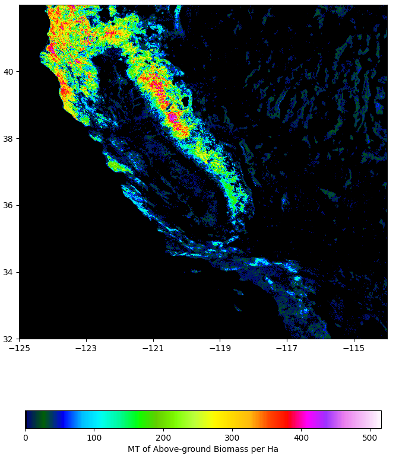
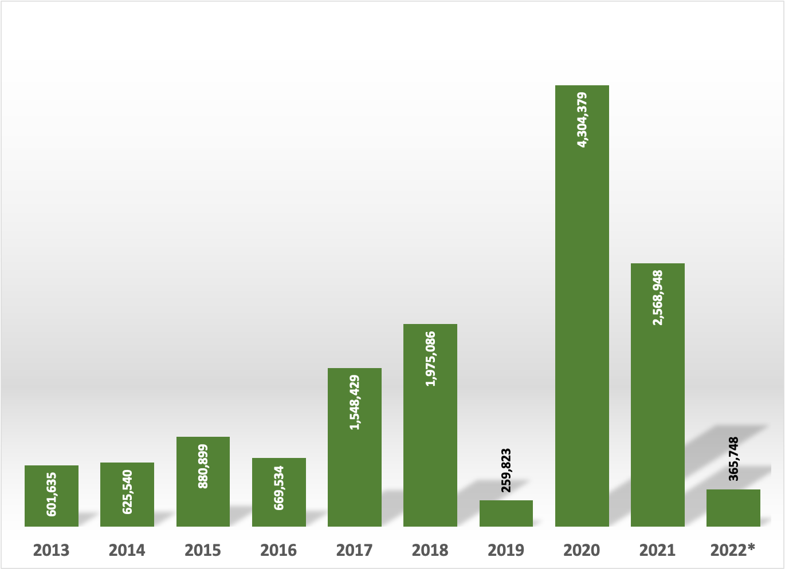
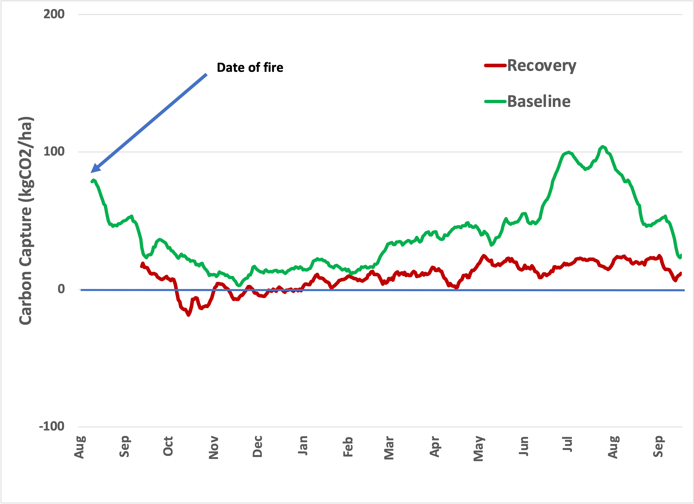

This week, I thought I’d ask a hypothetical question with a possibly insightful answer. The State of California has an established carbon market, such that “emitters” pay for the privilege of releasing CO2 into Earth’s atmosphere. This year, several “natural” wildfires have occurred in California, adding to the State’s contribution to GHGs in the atmosphere. So, how much would it owe if Nature were considered an “emitter”?
California’s market is a Cap and Trade system and includes “other” GHGs as CO2 “equivalents”. The law (AB32) also exempts “biomass” from its calculations for reasons that defy scientific or accounting logic since biomass combustion instantaneously releases CO2 collected over many years. At the same time, the “cap” is established yearly. Because of this exemption, the Franchise Tax Board’s answer to the question is $0, but, as I said, it’s hypothetical.
The question is more directly, “In 2022, how much carbon dioxide has Nature released in the State of California compared to the amount from geologic carbon sources?”
From the California Air Resources Board (CARB):
[T]he total implementation expenses budgeted for fiscal year 2022-2023 are approximately $98,671,000. The total emissions subject to the COI Fee Regulation for data year 2020 were approximately 285 million MTCO2e. Thus, the CCC used in 2022 invoices was approximately $0.34 per MTCO2e emitted.
So, now we have a baseline. According to California, emissions from easily tracked sources are 285 million metric tons (=1,000 kg).
We need additional numbers to estimate the value, specifically
-
How much area was burned?
-
How much CO2 was released from the biomass in this area?
-
How much CO2 was captured to offset this release?
There are model data that can answer these questions, and since this is an estimation, we don’t need to be too precise. Instead, the objective is to see if it matters.
For the first question, we can turn to CalFire , which tracks burn acreage. This year’s fire season is not yet over, so let’s use 2021 as a proxy. Last year, there were 8,835 fires, with a total of 2,568,948 acres burned.
The second question will be an estimation, although it could be more precisely quantified with more time and effort. Using the ESA Aboveground Biomass map (derived from satellite measurements and models) of California shows:

The burn areas have been chiefly in the mountainous, forested areas; by inspection, these areas seem to hold to about 250 MT per hectare (100 MT per acre). Areas subject to fire are likely less dense, at, say, 50 MT per acre. Further, much "biochar" remains after a fire, so the combustion isn't at 100% yield. So let's assume 25 MT of biomass is lost per acre. That’s just over 64 million MT of combusted biomass. As described in an earlier issue 1 , the conversion factor is about 1.5 (g CO2 released per g biomass burned), so the rough impact of the fires was the release of about 96 million MT CO2.
So, we’re talking about a direct impact of roughly a third (96/285) of the total emissions from geologic carbon. Of course, if the estimates are off, it could be higher or lower, but that’s a reasonable first approximation. It’s still an impressive number!
Was 2021 unusual?

It’s a little higher than whatever “normal” is these days, but it’s not extraordinary, at least during the recent prolonged drought.
The final question, “How much CO2 does Nature offset in California?” is a bridge too far for this installment and perhaps for the available data. It’s important since ecosystem absorption reduces the environmental impact of wildfires. While we could estimate the photosynthetic productivity of unburned wilderness, we can’t count recently burned acreage the same as mature acreage. In addition, because fires have become increasingly common, the metabolic recovery of carbon capture on burned land is not well known. More on that is below.
In the map above, there are about 25 million hectares with accountable biomass, and about 20 million are more than 100 MT per hectare. Because the agricultural areas tend to fall below that level (because of annual cropping and harvest), we can count those pixels as Nature’s domain. So, we’re in the ballpark of 50 million natural acres. Adding up the burned area from 2013-2022, it’s just under 14 million acres, or about a third of the total wildland area. I’m not saying that a third of California is charred beyond repair, only that the number is not negligible.
Scientists have looked at how ecosystems recover from a fire, and, perhaps not too surprisingly, how fast they recover depends on when the drought ends. Without additional water, there isn’t much regrowth. Plus, there’s not much data—it turns out that an Eddy Flux site in Australia was affected by wildfires in 2014 2 , and the tower was reconstructed, but public data is only available pre-fire. The paper states that net carbon uptake turned positive about a year later. I found one reference 3 to a wildfire site in Portugal where researchers set up a tower 45 days after the fire to observe ecosystem recovery, but there was no record of "before". To estimate what the "baseline" ecosystem might have looked like, I identified a FLUXNET site at a similar latitude with similar foliage 4 . I put both datasets through the previous analysis I used to compare ecosystems.

So, it looks as if about a third to a half of the carbon capture capacity of a burn is recovered within a year. So, it makes sense; see this video for a time-lapse recovery process. While some greening (with net carbon capture) returns, it takes time to regenerate the complete ecosystem.
In answer to the headline, it would be less than $10,000,000. But, the “price” on carbon is way too low. California’s “price” is a tax, it’s lower than the cost of energy required to capture the emitted carbon, so the funds don’t fix the issue. Read the above—it only covers the bureaucratic “implementation expenses,” and does nothing to capture the emitted carbon!! Consider that as you ponder whether a “carbon market” will have a measurable impact on the atmospheric changes leading to global warming!
Sun et al., “A wildfire event influences ecosystem carbon fluxes but not soil respiration in a semi-arid woodland”, Agricultural and Forest Meteorology 226–227 (2016) 57–66. doi.org